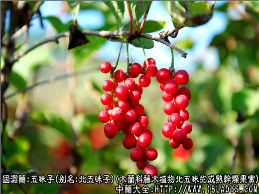
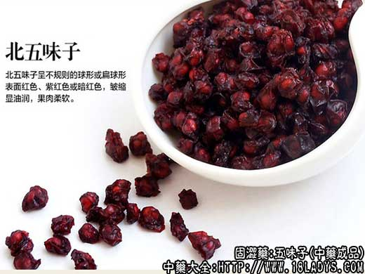
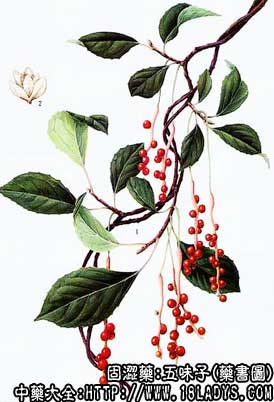

五味子为常用中药。始载于《神农本草经》，列为上品。商品有五味子和山五味子两种。
别名：辽五味、北五味（五味子），南五味（山五味）。
来源：为木兰科多年生落叶本质藤木植物五味子北五味和南五味子（华中五味子），（山五味子）的成熟干燥果实。野生。
产地：五味子：主产于辽宁省本溪、恒仁、凤城、宽甸、吉林省，黑龙江省，此外内蒙古，河北，山西等地区也有少量生产。
山五味子：主产于湖北、陕西、河南、云南、山西等地。
性状鉴别：
五味子：呈不规则球形或扁球形，直径约4～8毫米，常两个粘连在一起，新货皮为鲜红色或紫红色，陈货暗红色或黑棕色。多皱缩，皮肉较油润，显光泽，内含肾形种子1～2粒。。种皮坚脆，黄棕色，平滑，剥开后可见淡棕色种仁。气特殊微酸，果肉味酸。种子破碎后有香气，味微苦而辛辣。
山五味子：与五味子相似，唯果肉较薄，显干枯。黄棕色或棕褐色，无光泽。气味微淡薄。品质不及五味子。
以粒大，肉厚，色红，有光泽，显油润者为佳。
主要成分：果肉含挥发油越0.13%及有机酸（苹果酸、枸缘酸、酒石酸）少量、种子含脂肪油约33%及挥发油约6%此外并含有五味子素、维生素C树脂、鞣质及糖类。对其有效成分尚未一致意见，据最近研究报道，五味子的醚提取物有多种药理作用。
药理作用：
（1）兴奋中枢神经系统：能使放射的潜伏期缩短，加强大脑皮层的兴奋过程，提高皮层的细胞工作能力。但另有报道谓五味子的醚提取物有镇静作用。
（2）镇咳祛痰：有效成分为其醚提取物。
（3）兴奋子宫：对子宫平滑肌有兴奋作用，加强其节奏性收缩。
（4）抗菌：对痢疾杆菌、葡萄球菌、肠炎杆菌，以及老年慢性气管炎痰液中常见的细菌，有不同程度的抑制作用。
（5）降转氨酶：五味子蜜丸对慢性肝炎患者有降低血清谷丙转氨酶的作用。
此外，对实验动物有降血压作用和强心作用，又能提高感受器之感受性，对视觉的影响尤好。前任的经验也认为本品能“补虚明目”。其醚提取物还有增强肾上腺皮质功能的作用。
炮制：生用或酒伴蒸黑。
性味：酸、咸、温。
归经：入肺、肾经。
功能：敛肺止咳、滋肾涩精，上泻，止汗。
主治：肺虚咳嗽，口渴，遗精，自汗，盗汗，久泻久痢等症。
临床应用：主治肺肾虚寒之咳嗽，遗精。
（1）用于治疗虚寒喘咳。
如偏于肺虚咳喘，有寒痰（如老年慢性气管炎，肺气肿、支气管扩张等），常配干姜同用。五味子味酸连肺（镇咳、消炎）、干姜味辛发散（促进血循环），一敛一开，共奏镇咳平喘之效，故前人的经验说：”五味无干姜，肺肾之气仍不能纳降。“从现代医学观点看之属于药物的协同作用，能互相增强。但此时五味子用量宜小（3g一下），方如温肺化饮汤（处方见麻黄项下）。又治肺虚而兼外感之咳嗽，五味子亦宜与干姜或生姜同用。
如偏于肾虚喘咳，常配六味地黄汤同用，方如都气丸。对老年慢性喘息性支气管炎，可配麻黄、钩藤；虚喘较甚者，更需加配磁石、远志等安神镇静药，才能收到较好效果。
（2）治久泻久痢而属肾虚者，常配补骨脂，方如四神丸（处方见补骨脂项下）
（3）治汗出过多而致血气耗散、体倦神疲，五味子可当补药使用，常与麦冬、党参配伍、方如生脉散（处方见麦门冬项下）。
（4）治神经衰弱，取其有强壮的兴奋神经系统的作用，适用于过度疲乏、脑力劳动能力降低、记忆力和注意力将减退的患者，用其酊剂或片剂，有一定效果。
（5）试用于治疗耳源性眩晕（旧称美尼尔氏综合症），配酸枣仁等，有一定近期效果，对减轻或消除耳鸣和眩晕有帮助，方如五味子合剂。
（6）治过敏性、瘙痒性皮肤病，用北五味子10g，浸入80%酒精和100毫升中而成五味子酊，每日三次，每次5～6毫升，水冲服，对荨麻疹、血管神经性疾病等有较好效果。
（7）治慢性肝炎，以单味制成蜜丸或配茵陈、大枣制成蜜丸，有降低转氨酶作用，有效率在80%左右。
使用注意：
（1）热性喘咳忌用五味子。下列情况慎用五味子。1、外有表邪或内有实热、痧疹初发；2、较显著的高血压和动脉硬化。
（2）滋补宜熟用，治虚火宜生用。
（3）入煎剂宜捣碎用，入丸剂宜蜜制，以免酸涩过甚。由过酸而引起的副作用有上腹不适、烧心感、必要时可加服重碳酸钠缓解。
用量：1.5～9g，用于连肺镇咳量宜少（1.5～3g），用于滋补益阴量可稍大（6～9g）。